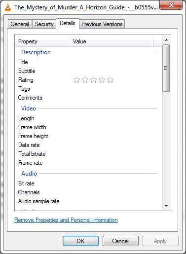
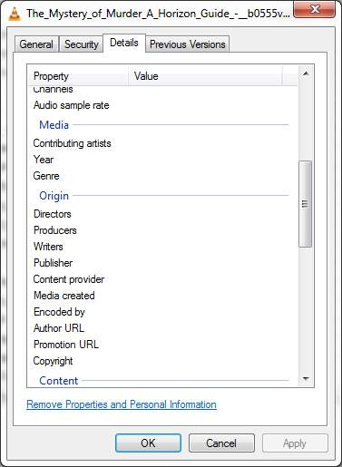
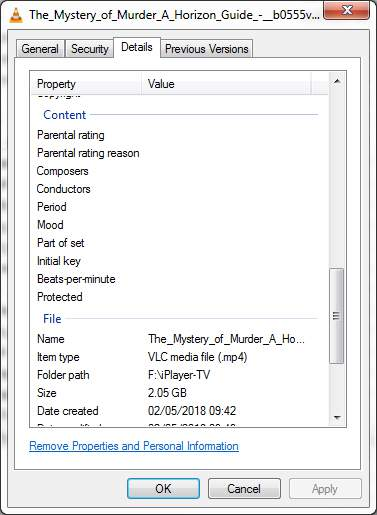

Using Windows 7 x64 Ultimate.
I've just downloaded a programme but most of the file properties are missing, such as title, length, comments, frame width height and rate, etc. See attached jpgs of properties.
The only time I've seen this type of issue has been when a file has got corrupted due to some hard drive problem and such files have refused to play, but on checking, this file plays perfectly well.
I've repeated the download and the problem remains. Log attached.
get_iplayer --pid b0555v7v --output=f:\iplayer-tv --tvmode=dvfhd2
I've tried another mode dvfxhigh2 for this programme with the same results.



log.txt
This is because DASH (dvf) downloads don't agree with Windows built-in media handling. For whatever reason, that programme doesn't have the usual complement of HLS (hvf) streams. Look at the files with a more capable tool like Mp3Tag - the tags are there. The files can be played with VLC, SMPlayer, and some others. This should be remedied in the next release of get_iplayer.
Sorry, I don't know how to go about this. I think of get_iplayer in "black box" terms, in that I have a general appreciation, but not a detailed understanding on what's going on and certainly no understanding at all of the mechanics of the actual processes in the "black box" such as tagging.
I've used MP3Tag in the past but only to change filenames and populate tags in MP3s to conform to my preferences. Looking at the completed file with MP3Tag (using the latest version 2.87a) it only seems to be able to read audio properties (for example, it sees the audio codec, bit rate and frequency). There doesn't appear to be a way to view video properties.
You say "the tags are there" - looking at the log I can see various tags in quotes - but I don't know how to extract them into the completed MP4.
Just re-download with --tvmode=hlsvhigh and don't worry about the rest.
Hmm, no can do.
C:\Program Files (x86)\get_iplayer>get_iplayer --force --tvmode=hlsvhigh --output=f:\iplayer-tv --pid b00jf36j
get_iplayer 3.13.0, Copyright (C) 2008-2010 Phil Lewis
This program comes with ABSOLUTELY NO WARRANTY; for details use --warranty.
This is free software, and you are welcome to redistribute it under certain
conditions; use --conditions for details.
Episodes:
Law and Order - A Detective's Tale, BBC Four, b00jf36j
INFO: 1 total programmes
WARNING: A UK TV licence is required to access BBC iPlayer TV content legally
INFO: Downloading tv: 'Law and Order - 1. A Detective's Tale (b00jf36j) [original]'
INFO: No specified modes (hlsvhigh) available for this programme with version 'original'
INFO: Available modes: hvfxsd,hvfhigh,hvfxhigh,hvfstd,hvflow
This is despite the fact that an --info request gives us:
modes: original: dvfhd1,dvfhd2,dvfsd1,dvfsd2,dvfxsd1,dvfxsd2,dvfxhigh1,dvfxhigh2,dvflow1,dvflow2,hlsvhigh1,hlsstd1,subtitles1,subtitles2,subtitles3
Very strange!
(02-05-2018, 03:54 PM)This is despite the fact that an --info request gives us:
modes: original: dvfhd1,dvfhd2,dvfsd1,dvfsd2,dvfxsd1,dvfxsd2,dvfxhigh1,dvfxhigh2,dvflow1,dvflow2,hlsvhigh1,hlsstd1,subtitles1,subtitles2,subtitles3
Very strange!
What do you expect? You're showing the --info result from your original programme (b0555v7v), not this other programme (b00jf36j). When I said "re-download", you can be pretty sure I wasn't referring to some other programme not yet in evidence.
Ooops, up arrowed from the wrong DOS box!
This limitation no longer applies with get_iplayer v3.14+
{kind=link}
{kind=link}
{kind=link}